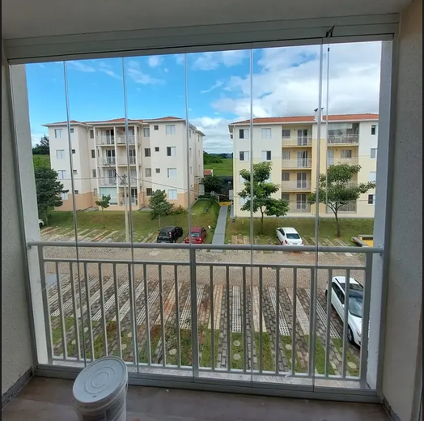
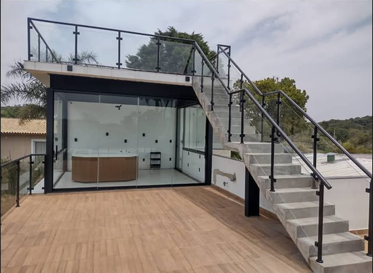

A Arte e a Precisão do Vidro Sob Medida para o Seu Imóvel.
Especialistas em Envidraçamento de Sacadas, Coberturas de Vidro, Guarda-Corpos, Box Piso-Teto, Portas, Janelas e Espelhos. Engenharia de ponta com vedação técnica e certificação ABNT NBR 16259/14.

Fechamento Panorâmico de Sacada

Tudo em Vidros para o Seu Projeto
Vidraçaria técnica de precisão e acabamento decorativo sob medida com instalação própria em Sorocaba e região.
Inspeção Interativa da Engenharia Murano
Explore a precisão do sistema de fechamento de sacadas. Escolha entre o comparador com hotspots ou o vídeo contínuo em 240 frames.
Trilho Superior Alumínio RAL 9005 & Vedação com Escovas 5x6
Perfil usinado em liga estrutural 6063-T6 com rasgo de 24mm e duplo leito de vedação por escovas de polipropileno hidrorrepelentes contra rajadas de vento e infiltração pluvial.
Acabamento de Alto Padrão em Obras Reais
Transparência Técnica e Respostas Claras
Tudo o que você precisa saber sobre a segurança, normas de condomínio e diferenciais de fabricação da Murano.
Qual a diferença do Sistema Encapsulado Sem Rolamentos para o sistema tradicional com roldanas?
Quais normas da ABNT garantem a segurança do envidraçamento de sacada da Murano?
A Murano atende apenas sacadas ou executa projetos completos em vidro?
Por que a Produção Própria da Murano faz diferença no prazo e no resultado?
Quais cidades e condomínios a Murano Vidraçaria atende?
Solicite Seu Orçamento Técnico em 15 Segundos
Selecione abaixo os itens do seu projeto e envie diretamente para o WhatsApp comercial oficial da Murano em Sorocaba.